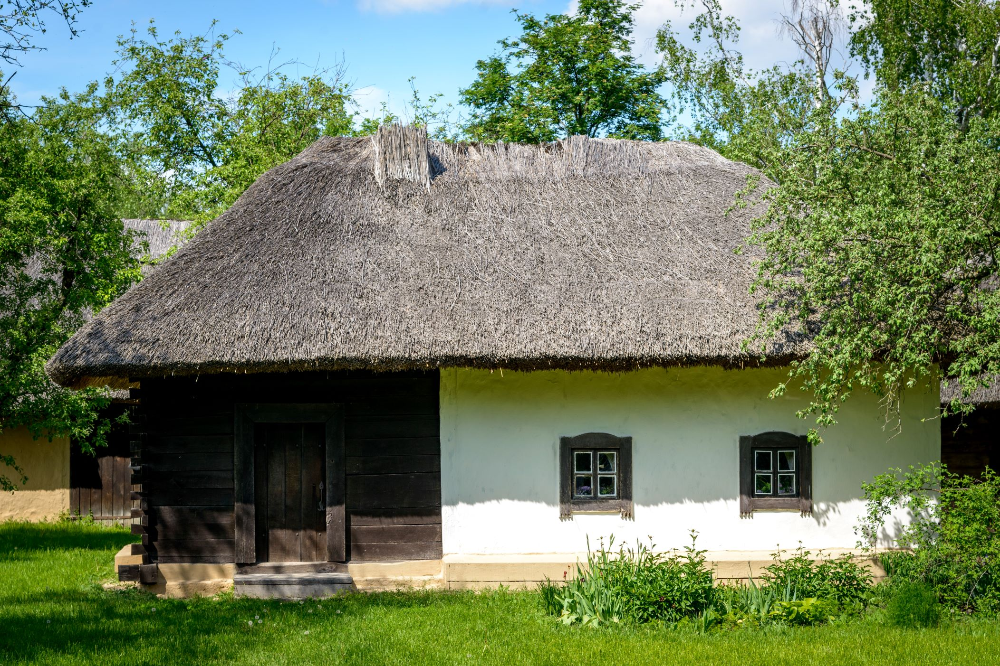

<>
lesson_2
Григорій Саввич Сковорода

Біографія

- Народився Григорій Сковорода на Полтавщині 22 листопада 1722 року у родині малоземельного козака Сави Сковороди. Пізніше Сковорода любив називати себе Григорієм Вар - Савою, тобто Сином Спокою.
- 1738 р. — вступає до Києво-Могилянської Академії.
- 1742 р. — Григорій Сковорода прийнятий півчим до придворної капели.
- 1744 р. — з валкою Єлізавєти Петрівни повертається до Києва й продовжує навчання в Академії.
- 1750 р. — подорож до Венгрії і далі по країнах Західної Європи.
- 1753 р. — повернення із-за кордону.
- 1 липня 1753 року написаний перший датований вірш Сковороди, присвячений вступові на єпископську кафедру в місті Переяславі Іоанна Козловича.
- 1753 — 1754 — час написання трактату „Рассуждение о поэзии и руководство к искусству оной”.
- 1754 р. — усунення Сковороди з посади вчителя піїтики в Переяславській семінарії. Григорій наймається домашнім вчителем до маєтку Каврай поміщика Степана Томари.
- 1755 р. — подорож до Москви і перебування в Троїце-Сергіївій лаврі.
- 1755 — 1758 — Сковорода знову живе в селі Каврай в Степана Томари.
- 1759 р. — Григорія Сковороду запрошено на посаду вчителя поезії до Харківського колегіуму.
- 1761 — 1764 — Сковорода — вчитель синтаксису та грецької мови в колегіумі.
- 1764 р. — подорож до Києва.
- 1768 — 1769 — Сковорода викладає катехізис в додаткових класах при Харківському колегіумі.
- 1769 р. — початок странницького періоду в житті Григорія Сковороди.
- 1770 р. — останні відвідини Києва. Сковорода три місяці живе в Китаєвій пустині, звідки перебирається до ахтирського Троїцького монастиря.
- 1774 р. — з початку цього року Сковорода живе в селі Бабаї на околиці Харкова. Тут він закінчує „Басни Харьковския” і дописує діалог „Кольцо”.
- 1781 р. — подорож до Таганрогу.
- 1785 — 1790 — Сковорода живе переважно в селах Гусинка, Маначиновка та Великий Бурлук.
- 1792 р. — весь цей рік Григорій Саввич знову живе у Гусинці.
- 29 жовтня 1794 року Г. С. Сковорода помер в селі Іванівка, заповівши написати на своєму надгробку: „Мир ловил меня, но не поймал”.